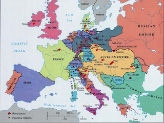

The Idol and the Avatar: Barack Obama, the second socialist politician from Illinois elected President of the USA, borrows some mojo from the first.
"The president addressed Congress the other day. I don't know which was scarier -- the speech, or Congress cheering him on. He invoked Lincoln. Whenever a president is going to get us in serious trouble, they always use Lincoln." --
Victor Milson, space adviser to the U.S. president, reporting ominous news from home to his friend Dr. Heywood Floyd (who is in the vicinity of Jupiter); from the film 2010: The Year We Make Contact.
While it cares little for customary piety, our ruling Nomenklatura displays the intolerant fervor of Paradise-bound Jihadis in defending the sanctity of the Almighty State and its avatars. In that pantheon there is none holier than the martyred founder of the Second (or People's) American Republic -- Abraham the Almighty, whose sacred likeness sits in stoic majesty in the Imperial Capital's most celebrated pagan cathedral.

Despite the fact that the candidate had a background barren of worthwhile accomplishments and a political vita that could be inscribed on the note inside a fortune cookie, Barack Obama's followers -- most likely in the thrall of a campaign-generated meme -- routinely compared him to Jesus.
Lincoln, by way of contrast, wasn't deified in this fashion until after his assassination. Now that he's scant weeks away from being garlanded with Caesar's crown and swaddled in the Imperial purple, the media's image-makers have joined in the chorus of deification, widely and shamelessly anointing him son and heir to Abraham the Divine.
In fact, Obama is the beneficiary of what could be called an affirmative action apotheosis: He's being sanctified before he's had an opportunity to do anything. Already, even before the Electoral College has assembled to cast its votes, Obama is being treated as the sitting president: He is conducting business with Congress and state governors, and reporters at press conferences convened by the "Office of the President-Elect" are required to stand as one in solemn, chastened reverence as His Holiness strides to the microphone, presumably hovering an appropriate distance above the ground so as not to be soiled by contact with the mundane.
(Don't bother to watch the whole thing; just take note of the first few seconds in which Obama bids the chastened throng to be seated.)
The first Lincoln, we should recall, was not greeted as a savior; instead, his election-by-plurality as a regional candidate was the result of a freak political bank-shot, and its impact immediately flung seven states from the Union.
Obama's ascent, by way of contrast, has had exactly the opposite effect. Rather than contemplating secession, state governments are looking forward with eagerness to Obama's reign, and governors are panting after the "stimulus" subsidies the Holy One has promised for public works projects.

Unlike banks accused of "hoarding" cash, and consumers who have quite wisely decided to pare down household spending, the state-level specimens of the political class aren't inclined toward thrift.
In pleading for Washington to shower them with plundered wealth, thereby preventing the need to thin the ranks of publicly supported parasites, the nation's governors have explicitly promised the incoming Obama Regime: You send it, we'll spend it.
So Obama won't confront a crisis of "disunion" from the moment he places his hand on whatever holy book he chooses next January 20 and perjures himself by promising to protect a Constitution for which he has no documentable respect. Like nearly all of those who held the office since Lincoln, Obama (at least on the basis of what record he's compiled, and his public statements) is a devotee of what Marxist historian George P. Fletcher calls "The Secret Constitution" -- an unwritten document that transposes the existing Constitution, which created a decentralized republic into a unitary state with an all-powerful central government.
It's not well remembered now, but Lincoln was perfectly willing to permit slavery to exist in perpetuity, and to allow restive states to be independent in everything but name, as long as Washington, D.C. was able to continue collecting the taxes necessary to keep its bondholders happy.
In his first Inaugural Address, Lincoln put forward the remarkable claim that the Union -- which he described, in near-theological terms, as an eternal and indivisible entity -- "is much older than the Constitution" and the states that formed it. For this reason it was impermissible to permit any of its constituent states to depart, since this would make the Union "less perfect than before the Constitution, having lost the vital element of perpetuity."
For the purposes of maintaining the holy unity of the divine Union, Lincoln was willing to abide practically any compromise. Not only could he support the permanent institutionalization of chattel slavery, Lincoln was prepared to countenance outright insurrection -- as long as it fell short of formal political separation and, most importantly, the refusal of citizens to pay, and state officials to collect, federal taxes.
"The power confided to me will be used to hold, occupy, and possess the property and places belonging to the [federal] Government and to collect the duties and imposts; but beyond what may be necessary for these objects, there will be no invasion, no using of force against or among the people anywhere," Lincoln promised. "Where hostility to the United States in any interior locality shall be so great and universal as to prevent competent resident citizens from holding the Federal offices, there will be no attempt to force obnoxious strangers [the federal talent pool being devoid of any other variety -- WNG] among the people for that object."
Of course, the same politician who offered that remarkable promise later reprovisioned Ft. Sumter, a tax-collection post situated in the territorial waters of a state that had withdrawn from the Union, as a deliberate provocation intended to precipitate the war.
ProfessorThomas DiLorenzo of Loyola College, author of a the definitive short biography The Real Lincoln (as well as the indispensable new book Hamilton's Curse) points out that at the time of the attack on Ft. Sumter several major northern newspapers described the event as the consummation of Lincoln's provocative designs. "Mr. Lincoln saw an opportunity to inaugurate a civil war without appearing in the character of an aggressor," commented the April 13, 1861 Providence Daily Post. That observation came a day after the Jersey City American Statesman described the resupply vessel as "a mere decoy to draw the first fire from the people of the South."
After the war began, Lincoln punished his media critics in predictable fashion by dispatching the military to close down thousands of northern newspapers, at least until their editorial boards were brought to heel. Call this a pre-Marconi version of the "Fairness Doctrine." "After Fort Sumter," observes DiLorenzo, "Lincoln wrote to his naval commander Gustavus Fox thanking him for his assistance in drawing the first shot."
Charles Adams, who has written several authoritative studies of that variety of institutionalized theft called taxation, points out that Lincoln's reaction to secession wasn't to exclaim "What will happen to those unfortunate human beings held in bondage?" but rather, "What will become of my tariff?" Through the tariff, the agricultural South was forced to subsidize the industrial North's embryonic corporatist system.
Just a few generations prior to Ft. Sumter, firebrands among the colonial Patriot movement were not assuaged by London's promise to govern with a lighter hand, and even to suspend the collection of certain taxes for a brief period. London still claimed the legitimate authority to extract taxes, and to use duress as necessary to accomplish that objective. Accordingly, the colonial Patriots weren't willing to settle for anything less than political independence. The drive for Southern independence was informed by the same calculations, and propelled by the same ideals, however imperfectly realized.
Lincoln, who had been willing to make slavery permanent, or to re-settle black Americans in Africa, cynically co-optated the emanicpation issue as a war tactic. This didn't change the core objective of his war, however, which was to create a monolithic federal state operating on corporatist principles -- that is, socialism for the wealthy and politically connected, such as the railroad trust that conveyed Lincoln to the White House.

In their fascinating recent book Red Republicans and Lincoln's Marxists: Marxism in the Civil War, Walter D. Kennedy and Al Benson, Jr. examine the role of the "48ers" -- veterans of the 18 interconnected revolutions that convulsed Europe in 1848-1849 -- in creating the Republican Party, bringing Lincoln to power, and conducting the war against the South.
Lincoln himself hailed the proto-Marxist revolution of 1848 in terms that seem, for him, profoundly odd. "Any people anywhere, being inclined and having the power, have the right to rise up and shake off the existing government, and form a new one that suits them better," insisted Lincoln in a January 12, 1848 speech. "Nor is this right confined to cases in which the whole people of an existing government may choose to exercise it. Any portion of such people, that can, may revolutionize, and make their own of so much of the territory as they inhabit."
Those seeking to "revolutionize" Europe weren't secessionists content to withdraw from existing political entities and leave others in peace. Their objective, as described by Kennedy and Benson, was to overthrow the existing political order under which they lived, and then consolidate power over larger territories. The objective was to reconstruct society, not merely to withdraw from oppressive, unjust political arrangements.
Germany provided both the best example of this centralizing revolutionary effort and a large supply of failed revolutionaries who migrated to the United States and later joined the struggle to suppress Southern independence. German revolutionaries, in describing their vision, declared that all of Germany -- which at the time was a fractious collection of principalities -- henceforth would be "a united indivisible republic."
Certainly, the revolutionary program appealed to idealistic impulses by promising to free people from arbitrary rule and feudalist institutions. "People were to be freed from local decentralized control," write Kennedy and Benson, only to be "placed instead under centralized authoritarian control" in the name of "Democracy."


(Click on map to enlarge.)When the revolt of 1848-49 was crushed, the "48er" diaspora brought many of the most ambitious and radical of the revolutionaries to the United States, where they were taken into the bosom of America's home-grown collectivist movement.
Many of them were instrumental in creating the Republican Party and mobilizing fellow expatriates to vote for Fremont and Lincoln. Some of them -- such as Joseph Wedemeyer, Charles A. Dana, Franz Sigel, August Willich, and Carl Schurz, to name just a few -- rose to commanding heights in the Union Army during the war. Dana, a personal friend of Karl Marx and Frederich Engels, was assistant secretary of war under Lincoln.
Gen. Wedemeyer was a friend and close associate of Marx in the London Communist League before migrating to the United States, where he distinguished himself as a publisher of Communist tracts (including the first American edition of the Communist Manifesto) and helped organize the Republican Party, and commanded a Union army.
Gen. Willich, whom Marx incongruously described as "A Communist with a heart," served on the Central Committee of the Communist League. His fellow 48ers referred to the Union General as "The reddest of the Red." A passionate admirer of the deranged terrorist John Brown, Willich gave a speech in 1859 urging his audience to "whet their sabers with the blood" of southern slaveholders.
Red Bluebellies: Marx's BFF Joseph Wedemeyer (left); German revolutionary-turned-imprisoner of American Indians Carl Schurz (below, right).

Franz Sigel's commanded experience at the time he was given a Union army consisted of leading socialist troops in a failed uprising in Baden, Germany. Carl Schurz, another veteran of the German socialist uprising, did little to distinguish himself as a Union general, but had lasting influence as a Senator from Missouri and Secretary of the Interior.
It was Schurz who created the American Gulag Archipelago called the Indian Reservation system (and it was his wife who pioneered the kindergarten system, better described as the ante-chamber to the Regime's collectivist mind-laundry).
Revolutionary collectivists of this variety clustered around Lincoln and his party because they understood the need to forge a unitary state out of the decentralized American republic -- and they were very aware of the fact that this could only be accomplished through total war. This view was well expressed in a hopeful note Engels wrote to Weydemeyer in which the war against the South was described as "the preliminaries of the proletarian revolution, the measures that prepare the battleground and clear the way for us."

Lincoln's war didn't preserve or restore the Union; it destroyed it and supplanted it with a new polity based on radically different premises. Just as Marxists of his era gravitated naturally toward Lincoln and vibrated like tuning forks when he spoke the language of raw power and ruthless centralization, Marxist academicians of our era understand the true nature of what Lincoln accomplished.

Among that number can be found Columbia School of Law professor George P. Fletcher, whose above-mentioned book The Secret Constitution acknowledges what Lincoln's critics have long maintained, in the teeth of criticism and contumely: The so-called Civil War was an effort to bring about "the consolidation of the United States in the mid-nineteenth-century European sense of the term" -- or, if you will, the post-1848 sense of the expression.
"One year into the war," continues Fletcher, "after a string of Union defeats, Lincoln learned that the old Union could not possibly survive. `A new one had to be embraced.' And the new Union would have to be based on a new constitutional order."
That new order, Fletcher elaborated, would be based on the premise that "the federal government, victorious in warfare, must continue its aggressive intervention in the lives of its citizens." Familiar institutions would remain, but their roles would be redefined and their powers completely revised within "a new framework of government, a structure based on values fundamentally different from those that went before."

For decades, the Soviet Regime and its agents celebrated Lincoln as a precursor to Lenin, and for very good reason: Both Lincoln and Lenin displayed nearly limitless tactical flexibility in pursuit of the power they exercised ruthlessly in the effort to create a vast, centralized Union (or Soyuz).
Shortly before his death, General Lee -- in a characteristically graceful reply to a kind note he'd received from Lord Acton -- explained that "the maintenance of the rights and authority reserved to the states and to the people [were] the safeguard to the continuance of a free government." By suppressing the option of secession, which is the ultimate peaceful check on the ambitions of a central government, the North had destroyed that safeguard.
In words that have the undeniable heft of fulfilled prophecy, Lee predicted that "the consolidation of the states into one vast republic, sure to be aggressive abroad and despotic at home, will be the certain precursor of that ruin which has overwhelmed all those that have preceded it."
Cast a look about you, ladies and gentlemen, and you'll behold the "ruin" of which Lee wrote. Those ruling us have pledged something in excess of $8 trillion -- more than half of this year's gross domestic product -- to provide a financial cushion for the politically connected criminals who preside over our financial system. In that fact we can see the real nature of the "Union" created by Lincoln: It is a forced marriage between the ignorant or deceived host and eager, esurient parasites.
The logic of Lincoln's triumph, wrote biographer Charles C.L. Minor, is that "the right to govern is paramount over the right to live, that man is made for government, rather than government for man, and that for men to claim the right of self-government is to deserve and incur the death penalty." This is why the Power Elite exalts Lincoln's name above all others and celebrates him as the Holy State made Flesh.
For those who reside within the bunkers and gated communities of the Power Elite, the rest of us are useful only as something to be consumed: We are producers whose earnings can be taxed, whose properties can be seized, whose children can be conscripted.
The deified Lincoln.

Peeling away the sentiment and mythology that encrust the relevant history, the comparison between Obama and Lincoln is an apt one, and not just because they're both tall, skinny men from Illinois (albeit by way of Kentucky in Lincoln's case, and Kenya -- most likely -- in Obama's).
Obama, a well-compensated legal agitator and foundation-connected "community organizer," straddles the narrow divide between collectivists of the corporate variety and those of the cultural Marxist persuasion.
Obama's vote for the plutocrat bailout demonstrated his fealty to the Wall Street interests that funded his campaign. His cabinet selections indicate a continued commitment to bipartisan bellicosity in foreign affairs, and to continued subsidy of corporate kleptocrats until the government's bankruptcy is consummated, the dollar collapses, and our country goes the way of Zimbabwe.
Here's a very sobering thought: The indecent eagerness of the opinion-molding elite to sanctify Obama as the New Lincoln may indicate that those who know the tempo of our unfolding collapse are aware that precious little time is left before the final catastrophe.
And I'm just cynical enough to wonder -- and either bold or stupid enough to do so aloud, for public consumption -- if the Power Elite might decide that Obama should join Lincoln in "martydom." Some people are already dropping some pretty potent hints of that variety.
That's why I earnestly pray that Barack Obama will enjoy a long, healthy life following a single, forgettable term in the White House.

It's getting scary, isn't it? Buy the book for someone who can handle the truth.
Dum spiro, pugno!
22 comments:
Ahhh, yes - Thomas DiLorenzo opened my eyes to "The Real Lincoln" many years ago. Truly amerika's first dictator. Personally, I'd like to see his effigy drug from it monumental perch in much the same way Sadam's was on all our T.V. screens.
It is also why I have the 'nome de plume'
Sic Semper Tyrannis
Monsieur Sic Semper Tyrannis:
You are free to take any nom de plume that you wish, but the correct spelling of "nome de plume" is "nom de plume".
Monsieur Grigg:
Your article is, comme toujours, marvelously witty, bitinlgy sarcastic, and spot on. The photo of Nobama underneath the Big Brother-like photo of Abe the Knave reminds me of the photo of Bush the Lesser, with what looked like a halo over his head, that circulated around the email-net a few years ago. I love the way you liberally pepper your well-reasoned writings with outrageous similes and snippets from foreign languages. My only regret is not having discovered your archived blogs until very recently. Touché encore!
There is at least one strong Nobama supporter who has already seen, through the sainted one's already named appointee wannabes, that Oh! Bama! is merely another lying, political weasel. Check out Ted Rall's cartoon of disillusionment at http://news.yahoo.com/edcartoons/tedrall.
Bill Fairchild
Franklin, TN
Wow!
Will, what I have learned from your blog over the years constitutes the equivalent of a graduate degree. This post is particularly timely for me because just yesterday at a Republican club (I've invaded them per Ron Paul's plan), the upcoming "Lincoln Dinner" was discussed.
As a Texan whose family suffered from the lingering effects and economically retarding result of Reconstruction and federal occupation, I never liked Lincoln. Now I really don't like him.
I just heard a speech from the admirable Ray McBerry on this topic the other night at a League of the South meeting. He addressed Lincoln's use of foreign Marxist mercenaries in his quest for and implementation of total warfare. Our forefathers in the South had the sense and the guts to know when it was time to call off all bets. It's time to end this arranged marriage, and divorce never looked so good.
One of the most shocking and eye-opening articles of yours that I've read in a long time. I've had prior knowledge when I read most of your previous articles over the past few months, but I truly had no idea about Lincoln's use of Marxists. Thanks.
Lincoln was also the first President to suspend the writ of habeas corpus.
As for your contention that Obama came via Kenya, I don't think it is plausible. He surrendered a copy of a certificate of "live birth" to the media from Hawaii. I don't believe that conspiracy, as I had to solicit an apostillated copy of the same from Idaho, in order to establish residency abroad.
I have both the original birth certificate and the latest state-issued document which redacts much of the info. contained on the master copy. No it is not from Hawaii, but I can see the similarities and find this theory full of holes, just as I do Jerry Corsi.
Will:
I am deeply concerned about your theological slackness. Here you have published a lengthy blog wherein you have used Our President's Name numerous times, but not once have you shown him due reverence by adding the obligatory "peace be upon him!"
I nominate you for the Pulitzer prize.
Dear Will,
Bravo! Huzzah!
Thank you for another very educational essay. Yet another tour de force. On my next visit to the excessive Lincoln Monumental Temple here in my hometown of DC, I promise I shall give Our Dear Leader's exorbitant marble effigy (and imagine! - we were told they only build such ridiculous things in North Korea) a one-fingered salute on your behalf - surreptitiously beneath my clothes, of course, since we happily, (or so we are told,) live in The Land That Abe Built, and the eyes and ears of Those Who Protect Us From Ourselves (TWPUFO) are everywhere.
One wonders: Shall we common unwashed folk ever be free of the Power Elite, or is the domination imperative just the way we humans are made - like the troops of monkeys and baboons from which we devolved? Whether you call them Moghuls, Mandarins, Nomenklatura, Congress, or just, collectively, Those Whose Shit Does Not Stink, (TWSDNS), they seem to have been everywhere and always with us (or, rather, Above Us, as they would have it,) and seem likely in the future to always be Above And Over Us.
(Us, of course being the uppity peons who audaciously expect from life enough food to keep us from starvation, some shelter from the rain, and enough air to allow us to breathe. What a foolish tribe of ever-whining and importunate peasants we are! Crumbs falling from the Magnificent People's tables, indeed! Do we mangy curs imagine the loaves came free? Let us now all proceed to eat cake.)
TWSDNS, of course, is not how they see themselves. They are blithely certain they are TWAARTHU: Those Who Are Always Ready To Help Us. Always charitably and selflessly willing to help us lighten our burdensome loads.
I just paid the IRS $5,300 on October 15, and, always happy to help, they now have sent me a friendly letter offering to lighten my load by another $308 in "penalties" and "interest." Ah! A great light has dawned upon me. The "penalty" is for being insufficiently grateful for their prior help to relieve my burden of excessive cash, and the "interest" is just to let me know they are always interested in my welfare.
Oh, but they ARE interested in our welfare! Why do you suppose Obama, Paulson, Bernanke, Bush And Company are so concerned about us these days? It is because we geese no longer lay golden eggs, we cash cows no longer give milk, and our asses will no longer yield grain in abundance to their plowing.
Once upon a time, not so long ago, suicide was a crime. To attempt to remove one's life and body from the ownership of the Power Elite would land you in jail. I believe they only discontinued the practice because some of us little worms started to realize and discuss the implications of it.
Will, Dear Heart, please keep the educational essays coming. If you ever wish to occupy yourself with other humanitarian works, you could always patrol the roads of Idaho in winter, looking for stranded motorists. Attach jumper cables to your tongue and your writing hand, and I bet one would find enough battery acid between the two to jump-start a Mack truck.
Kind regards,
Lemuel Gulliver.
My guess is that Obama will put his hand on one of his own books to be sworn in. ;-)
And thus shall all presidents after him.
Stinkin' Lincoln!
(How's that for profound prose?)
**Not for publication - Obviously**
Hey Will,
Has nobody commented after I did, or have you just been too busy to read and upload the emails? If nobody has commented following me on this wonderfully educational essay you wrote, please go ahead and take my remarks down, and let's see if anyone else will step up and comment. It is unprecedented that you should only have 9 replies on this essay. Perhaps what I said put them off.
Thanks,
Lemuel Gulliver.
Naw, Gulliver it's not you!
This web-world sharing makes me self-conscious sometimes too!
I also look forward to ongoing discussions via the comment posts and am disappointed when this doesn't happen.
It's the beginning of the month (as well as)the holiday season and many of we common folks are currently scrambling to meet the challenges of keeping our roofs and utilities - plus, enough food to stay conscious.
I always enjoy these essays and comments though! They keep my spirits up oddly enough. Lots of us read and don't write often due to time constraints.
Not to mention the endless list of "issues" (such a mild sounding word) we're all trying to get up to speed and speak up about.
My oh my, where DOES that time go?
Yes, Lincoln forcibly destroyed the old republic and by doing so shored up the underpinnings of the northern corporatist welfare/warfare state. It wasn't until the 1887, however, that the process neared almost full bloom with passage of the Interstate Commerce Act. The larger railroads, already made fat, powerful and wealthy by feeding upon generous taxpayer provided road construction subsidies and land grants, soon desired government enforced protection from "hurtful" price-cutting competition - allegedly for the public good, of course. It was an insidious dream made possible by railroad lawyers who essentially crafted the repugnant legislation. They were well aware that protecting their employers, the biggest players, from "unfair" competition would never be achieved in the then semi-free market system that existed prior to passage. The goal would require nothing less than brute government force carefully disguised as benevolent fairness intervention. It's all covered in Kolko's scholarly and fascinating read, "Railroads and Regulation".
Mr. Grigg,
I just read your blog for the first time, and I find it to be refreshing, well-written, informative, and Libertarian! I will follow it now. Thanks.
CC Truckston, you won't regret it.
-Sans Authoritas
Excellent comment, Anonymous. The commerce clause has been used for everything from gun control to dictating business practices to regulating drugs. The Supreme Court has used an expansive Hamiltonian (or do I repeat myself?) "interpretation" of the commerce clause for quite some time. Will has endorsed a preemptive impeachment of Obama; while we're at it, we should go ahead and lump the members of the U.S. Subpar Court in with him.
This blog article, 'The Lincoln Gambit', is one of Grigg's best essays. Will's always been an excellent writer and researcher, but now, he's reached the ionosphere with his skills and abilities. He's clearly improving with age. Why a paleo-libertarian magazine like The Republic hasn't picked him up as a salaried writer is beyond me.
A hat tip to Sans Authoritas, Sic Semper Tyrannis and Jerri Lynn Ward: You guys write some of the best comments. You all complement Will's comment section with your insightful observations. This blog and comment section is rated number one on my favorites section!
And finally, I offer you all a libertarian season's greetings. Without compromising my firm belief in Y'shua as the great God and Savior of the world (Titus 2:13), I wish my fellow Christian trinitarian monotheists, and the secular atheists, the Jewish monotheists, the Mormon henotheists, the Muslim monotheists and the Eastern pantheists a most splendid holiday season with your loved ones, to celebrate -or not- Christmas in the way that best suits you all.
May we all defend each other's freedom of conscience, to believe in whatever transcendent Object or objects touches our hearts and minds without fear of violent coercion, whether that coercion emanates from private or religious institutions, mobs, individuals, or the State.
May we all defend each other's freedom of speech. The freedom to dialogue and debate over religious/spiritual and political matters is also an integral and essential element of our inalienable human right to free speech. Let us defend these principles of liberty with every ounce of our being.
God bless, RW
Mr. Grigg,
Your posts are consistently well researched and written. Oh yeah, and quite bold. You realize, of course, it is a cardinal sin within America's civil religion to cast dispersions on Saint Abraham.
I thank God that He has raised up a servant in Idaho who fears and reveres HIM more than man.
Your blog has become a daily read for me. Keep up the good work, sir. It is most appreciated.
Nice post, Will, very nice.
Appreciate the mention of the Red Republicans. Had heard of the title previously, but now need to get it.
In line with RR and Fletcher, literary critic Edmund Wilson said Bismark, Lenin and Abe,
"presided over the unifications of the three great modern powers. . . Each established a strong central government over hitherto loosely coordinated peoples. Lincoln kept the Union together by subordinating the South to the North; Bismarck imposed on the German states the cohesive hegemony of Prussia; Lenin . . .began the work of binding Russia, with its innumerable ethnic groups scattered through immense spaces, in a tight bureaucratic net (Patriotic Gore, 1962, pp.xvi.xvii)."
Glad also to see you mention the Zimbawe connection here and keep hammering on it in your next post.
As before, if the 'whiteliberalguilt' voters (schmucks) really were looking for a 100% black, 100% African, 100% socialist, 100% experienced (at wrecking an economy) candidate, Robert Mugabe was their man.
Further, rampant inflation preceded not only the Nazi, but also the French and Bolshevik revolutions. Not good precedents.
May God keep us from repeating those dismal histories.
Thanks again,
Maybe we will emulate our Roman Republic predecessors more closely and make emperor worship mandatory. We already have Lincoln and MLK to worship, despite being martyred by dubious interests.
I don't know if anyone else remembers this, but reading this article gave me a flashback to the long forgotten ABC Miniseries "Amerika" that aired in 1988 or 89. There is a scene in a midwestern town, the kids are playing baseball, then the national anthem begins (the Soviet national anthem) and the parade marches down the middle of main street bearing Lincoln and Lenin banners.
Post a Comment